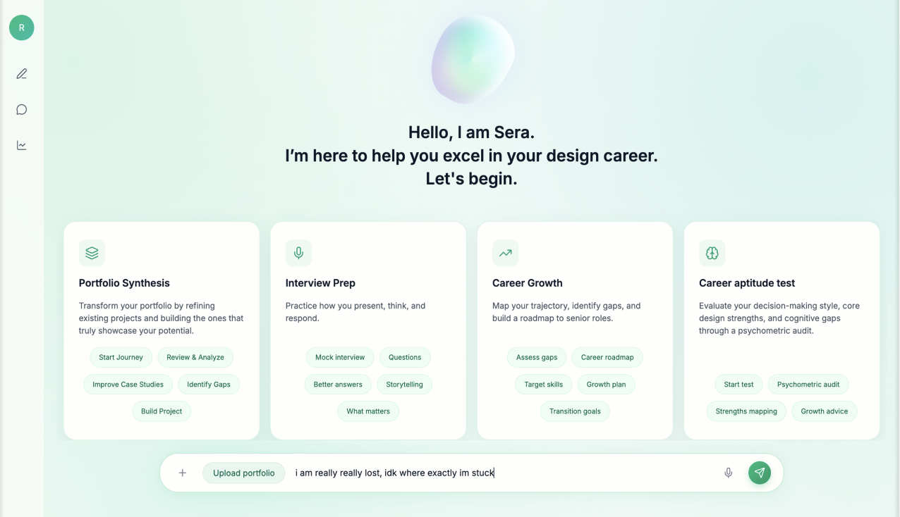

An AI career companion for designers, helping them build stronger portfolios, prepare for interviews, and navigate what comes next.

We have AI that can generate interfaces in seconds. Yet becoming a better designer still feels like navigating in the dark.
Sera is an AI-powered design career companion that empowers designers to build stronger portfolios, prepare for interviews, identify skill gaps, and navigate career growth through personalised mentorship and visual workspaces.
Designers rely on scattered resources, making career growth fragmented and overwhelming.
Career growth is fragmented
Designers are expected to manage portfolios, interviews, skill gaps, career direction, feedback, mentorship, and opportunities across disconnected resources.
We started by looking at how existing platforms support people across learning, career growth, mentorship, and professional development.
To understand how people navigate career growth, we spoke to people at different stages of their professional journey.
Exploring what comes next
People who are still figuring out their direction, exploring career opportunities, and trying to understand which skills and paths are right for them.
How do people make career decisions when they’re still figuring out where they want to go?
Building experience and finding direction
Designers who have entered the industry and are actively building their portfolios, preparing for opportunities, and figuring out how to grow.
What makes it difficult to turn existing experience into meaningful career growth?
Navigating what’s next
Designers with professional experience who are considering their next move — whether that’s changing roles, specialising, or pursuing new opportunities.
How do experienced designers decide what their next step should be?
Across these perspectives, we were looking for the patterns behind career uncertainty.
Looking across the career journey and the existing ecosystem, several recurring gaps emerged in how people are guided, supported, and kept moving forward.
Support disappears after meetings, leaving users without structure, momentum, or accountability in their day-to-day progress.
Career platforms often reset between interactions instead of maintaining an evolving understanding of the person's goals, experience, and progress.
Good recommendations are often provided without a built-in environment for practice, measurement, and iteration.
Resumes, applications, interview preparation, courses, mentors, and career resources often live in separate places.
People can struggle to understand whether they are actually prepared, competitive, or ready for their next opportunity.
Most systems wait for users to ask for help instead of recognising when momentum is dropping, a gap is emerging, or an opportunity is approaching.
These gaps pointed to a bigger opportunity: career support needed to be continuous, contextual, and actionable.
We explored different ways SERA could turn career guidance into something more actionable, contextual, and connected.
Exploring how SERA could guide users through portfolio development and career decisions.
Exploring how different career needs could come together within one connected experience.
The direction became clearer: SERA shouldn't just recommend the next step. It should help people understand it, act on it, and carry that context forward.
The coach is now evaluating your live responses.
Product Designer · 2 years
Senior Product Designer
Thinking · Impact · Clarity · Structure · Curiosity
Portfolio Synthesis analyzes research, storytelling, visual hierarchy, and hiring signals to deliver actionable feedback.
Your journey to a recruiter-ready portfolio.
Portfolio Synthesis analyzes research, storytelling, visual hierarchy, and hiring signals to deliver actionable feedback.
Your journey to ace every design interview.
AI Interviewer · Design Hiring Manager Mode
Practice realistic voice-to-voice interviews where the AI adapts, evaluates, and coaches you in real time.
Your personalised roadmap to become a better designer.
Discover your strengths. Find the roles that fit you best.
How much should AI do?
The designer stops thinking. Little is left to learn.
Sera prompts, questions, and coaches; the designer still does the work.
Guidance over replacement.
One of the hardest decisions was deciding where AI should step back. If Sera solved every problem for the user, there would be very little learning left. The product had to guide thinking, not replace it.
The challenge wasn't building AI features, it was making them feel familiar, trustworthy, and integrated naturally into a designer's existing workflow.
Deciding where Sera should step back was one of the hardest calls, the product had to guide thinking rather than replace it.
Most career advice tells designers what they should improve. Sera focuses on what they should do next. Splitting the journey into dedicated workspaces made overwhelming goals feel achievable.
Every portfolio review tells me what's wrong, but nobody explains how to actually improve it.
Everyone gives different advice, and I don't know which feedback actually applies to me.
Sera was designed as a three-person team project. This page documents my individual design work within that collaboration, from the research and problem framing through to the interaction and AI-experience decisions above.
SERA
Helping designers figure out
what comes next.